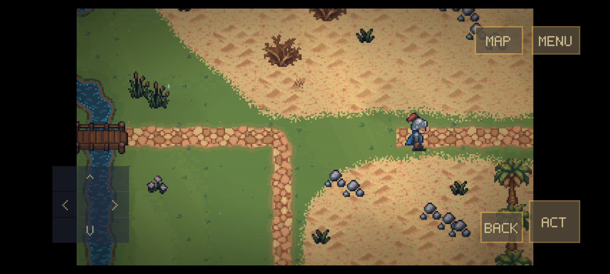
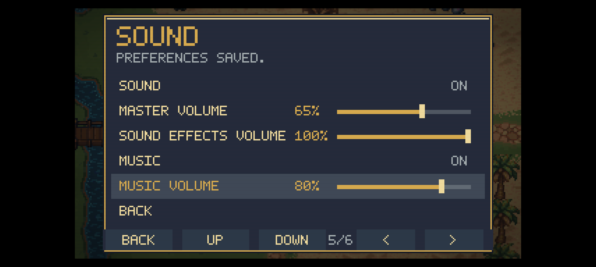
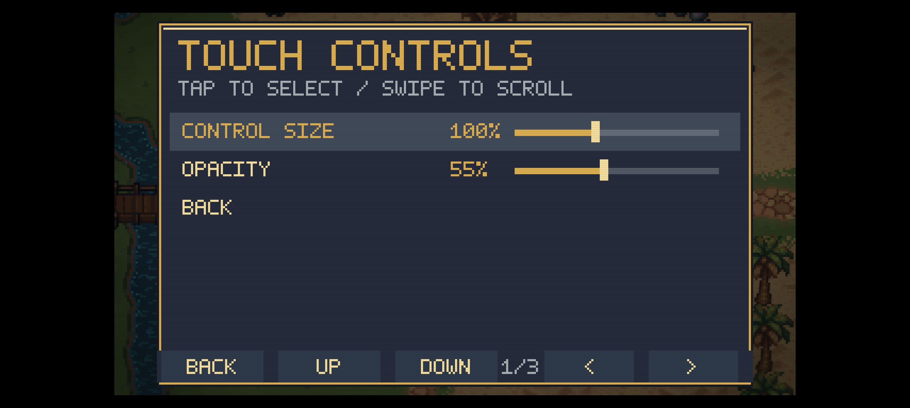
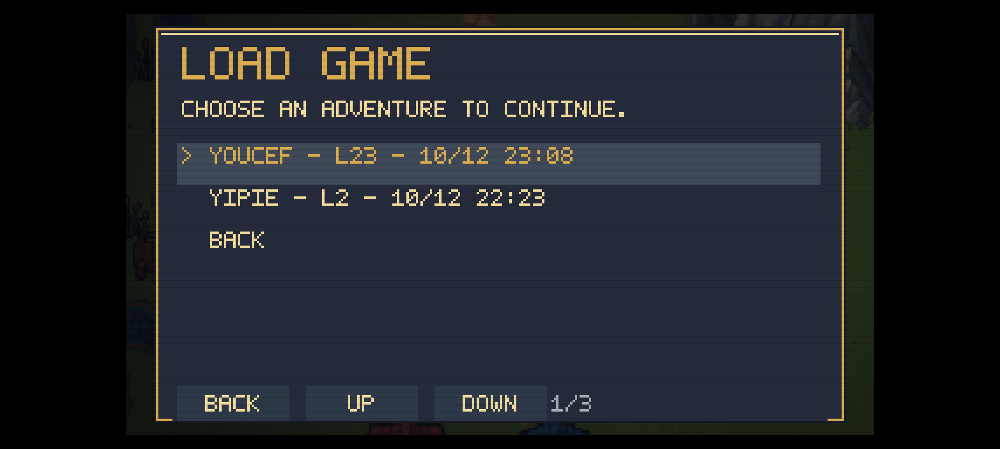
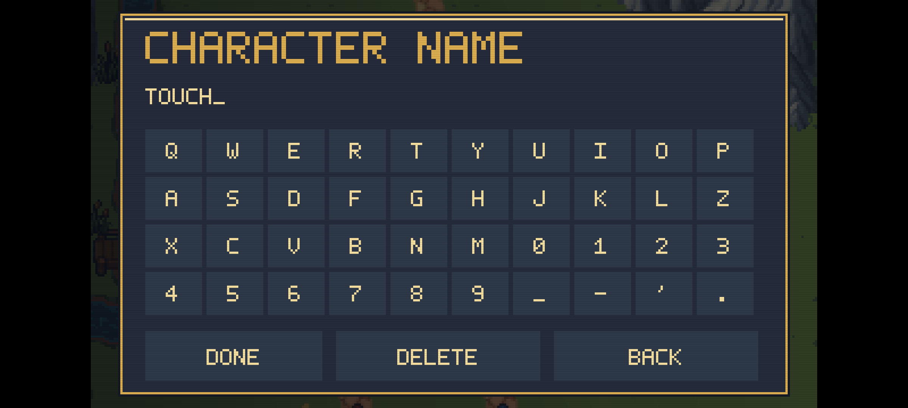
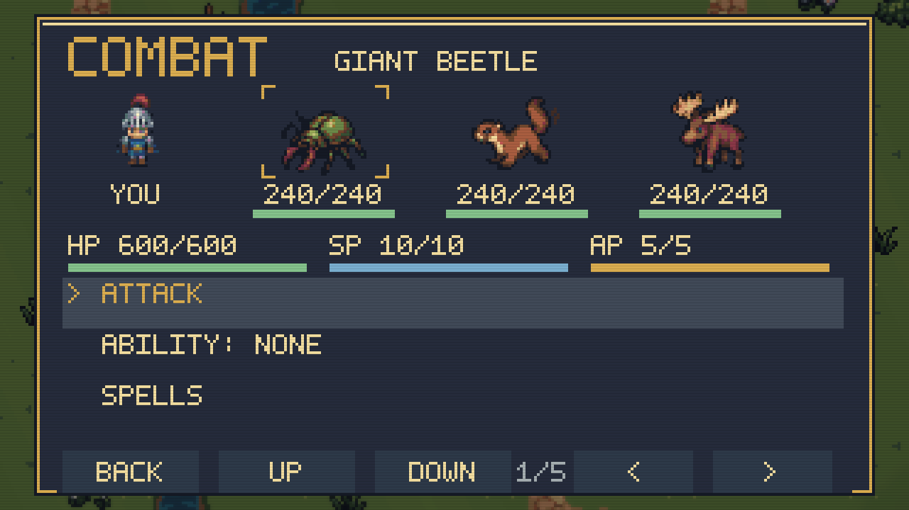

Icosium Labs · Android ARM64 · 12 October 2026
Touch controls, on your Pixel
Installed version 0.2.0-touch. Move with the eight-direction pad, tap ACT/BACK/MAP/MENU, tap menu rows, swipe to scroll and drag volume sliders. Adjust size and opacity under Options → Touch controls. Connecting a controller hides the virtual world buttons.
12-second recording from the Pixel: movement, map and menu taps. No audio track. Inputs injected through Android; this is not a performance benchmark.
Actual phone captures

Pixel 11 Pro XL, API 37. World controls sit inside the display’s safe edges.

Dragging music from 50% to 80% keeps the row selected. Restored to 50% after testing.

Default control size 100%, opacity 55%. Size adjustment checked and restored.

Both existing adventures survived the update. The level-23 adventure was saved, reloaded and left open.
Name entry and combat

Final APK on the API 36 ARM64 emulator: direct taps enter a name.

Shared-renderer test on macOS. Attack and buffered rapid Continue pass; physical Android campaign combat remains a separate test.
Verification
- 681 core/input/persistence checks and 173 focused menu/music/touch checks pass.
- Clean Android and macOS builds; normal macOS startup and display changes pass.
- 208 APK assets verified, signature verified, 16 KiB zip alignment checked.
- Pixel movement, map/menu taps, scrolling, sliders, save/load and Home/resume pass.
Physical controllers, hands-on simultaneous multi-touch, a full mobile campaign and sustained phone performance remain unverified. Durable distribution signing and save export are still later work.
Detailed test record and limits · 173 menu checks · 681 core checks · APK checksum